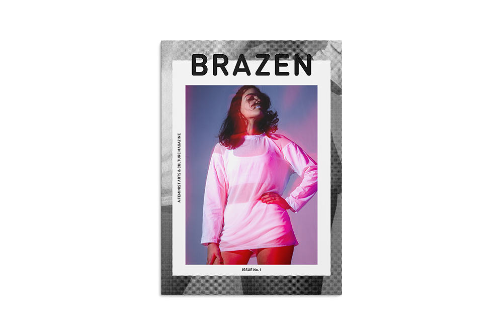
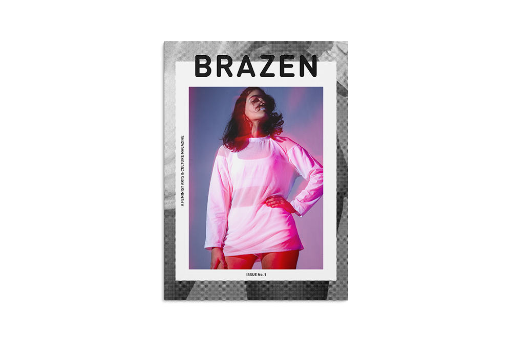
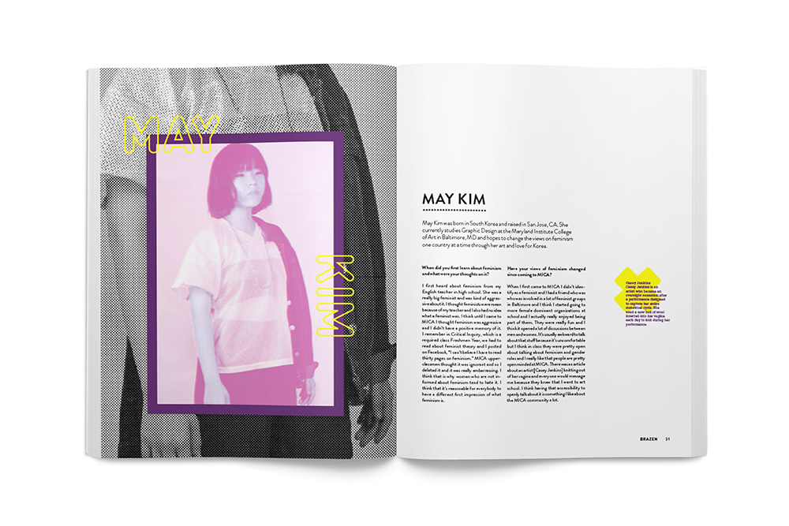
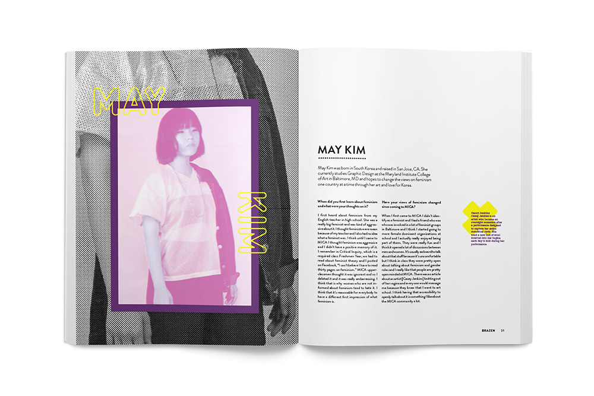

Brazen Magazine
Brazen Magazine is a feminist arts and culture magazine. It is a collaborative production that celebrates and embraces the aesthetic, intellectual and political impact of women on today’s culture. This magazine focuses on the achievements of women and how feminism impacts their lives. Brazen strives to engage women of all colors, ethnicities, nationalities, sexualities, religions and cultural backgrounds. It fights to create a platform for women to voice their thoughts, embrace their identity and to showcase their work. Brazen Magazine aims to expand the definition and goals of feminism in order to create a better and more positive understanding of the term. Read Issue One.
 


 
